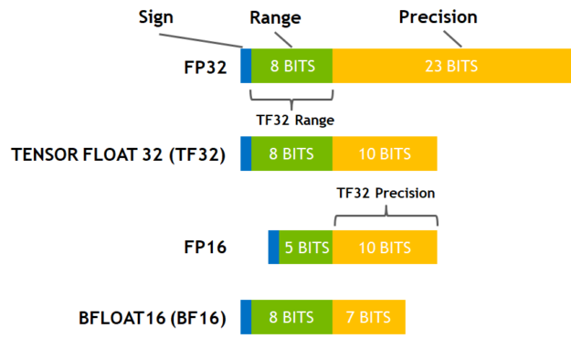
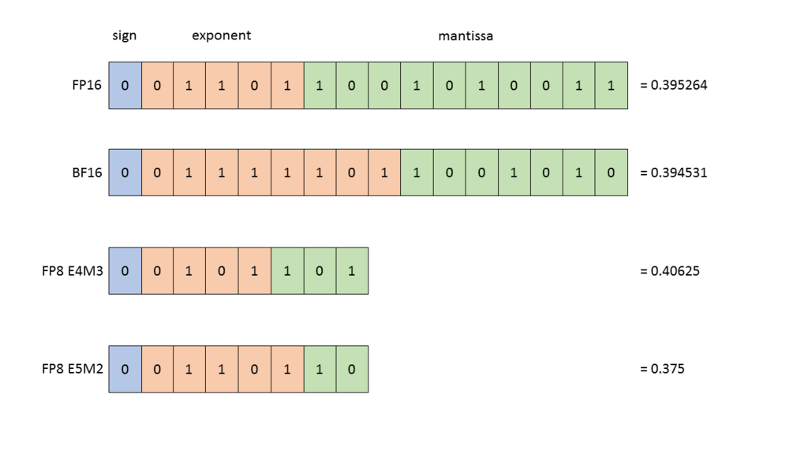
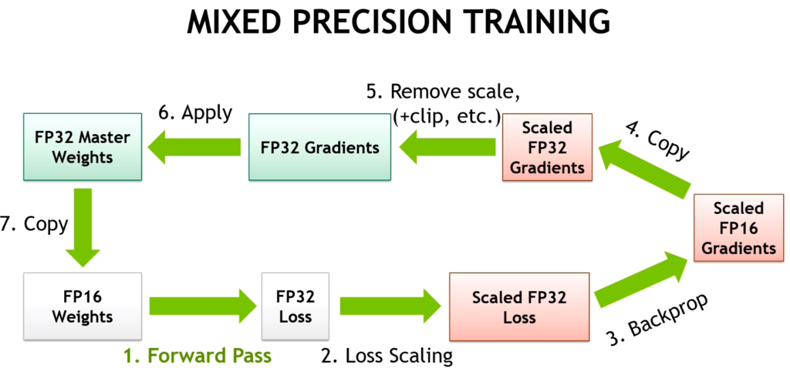

张量精度 / 数据类型¶
以下是截至 2026-08 在 ML 中常用的数据类型（通常被称为 dtype）：
浮点格式：
- fp32 - 32 位
- tf32 - 19 位（NVIDIA Ampere 及更新架构）
- fp16 - 16 位
- bf16 - 16 位
- fp8 - 8 位（E4M3 和 E5M2 格式）
- fp6 - 6 位
- fp4 - 4 位
如需直观对比，请参考这些图示：

（来源）

（来源）
新硬件正在采用的新格式如下：
- fp4：
float4_e2m1fn - fp6：
float6_e2m3fn和float6_e3m2fn - fp8：
float8_e3m4、float8_e4m3、float8_e4m3b11fnuz、float8_e4m3fn、float8_e4m3fnuz、float8_e5m2、float8_e5m2fnuz、float8_e8m0fnu
关于每一种变体的出色解释见这里。
float8_e8m0fnu 在上述列表里是个异类——它不是一种元素格式，而是块缩放（block-scaled）格式为一组元素附加的共享缩放因子（shared scale），这就是它没有尾数的原因。把它与 4 位、6 位或 8 位的元素编码搭配使用，就得到了加速器规格中被引用的 MXFP4/MXFP6/MXFP8 这些名称：每 32 个值组成的一个块配一个 E8M0 缩放因子，其每个参数所占的字节开销在模型权重中有推算。NVIDIA 的 NVFP4 是同一个由两部分构成的思路，只是调校不同——使用同样的 E2M1 元素，但块大小为 16，配一个 E4M3 缩放因子，再为整个张量附加单个 fp32 缩放因子，这比只能取 2 的幂的 E8M0 缩放因子能更贴近局部的动态范围。
对于后面跟着数字的字母：
e表示指数（exponent）的位数m表示尾数（mantissa）的位数b表示偏置（bias）
对于出现在数字后面的字母：
f表示只包含有限值（没有无穷大）。n表示包含 NaN，但只出现在取值范围的最外围。u表示无符号格式。uz表示无符号零。
例如：float8_e4m3b11fnuz 表示 fp8 + 4 位指数 + 3 位尾数 + 偏置 11 + 仅包含有限值 + 包含 NaN（但仅出现在取值范围的最外围）+ 无符号零。
量化中使用的整数格式：
- int8 - 8 位
- int4 - 4 位
- int1 - 1 位
ML 中 dtype 的演进¶
最初 ML 使用的是 fp32，但它非常慢。
接着人们发明了混合精度，将 fp16 与 fp32 结合使用，使训练速度得到了极大的提升。

（来源）
但事实证明 fp16 不够稳定，用它训练 LLM 极其困难。
幸运的是 bf16 问世并取代了 fp16，沿用了同样的混合精度方案。这使得 LLM 训练稳定得多。
随后 fp8 出现，混合精度可以切换到该格式，这让训练甚至更快。参见 FP8 Formats for Deep Learning。截至 2026-08，bf16 混合精度仍是大多数训练任务的默认选择，但 fp8 训练已不再是实验性的——DeepSeek-V3 就是以 fp8 训练的。
再之后 Blackwell 加入了 fp6、fp4 以及 NVIDIA 自家的 nvfp4。到目前为止，这些主要还是推理格式，不过 nvfp4 的预训练方案已经开始出现——参见 FP4 格式。
为了直观感受不同格式之间的加速差异，这里给出一张 NVIDIA B200 的 TFLOPS 规格表（不含稀疏化），并附上首个在非 CPU 硬件上支持各 dtype 的加速器（CPU 做深度学习很弱）。表格按 B200 TFLOPS 升序排列；当几种 dtype 速度相同时，则按硬件支持出现的年份排序：
| 数据类型 | B200 TFLOPS | 首次硬件支持 |
|---|---|---|
| fp32 | 80 | 早于 ML 加速器的出现 |
| tf32 | 1125 | NVIDIA A100（Ampere，2020） |
| fp16 | 2250 | NVIDIA P100（Pascal，2016） |
| bf16 | 2250 | Google TPU v2（2017） NVIDIA A100（Ampere，2020） |
| int8 | 4500 | Google TPU v1（2015） NVIDIA P4/P40（Pascal，2016） |
| fp8 | 4500 | NVIDIA H100（Hopper，2022） Intel Gaudi 2（2022） |
| fp6 | 4500 | NVIDIA B200（Blackwell，2024） |
| mxfp4 | 9000 | NVIDIA B200（Blackwell，2024） |
| nvfp4 | 9000 | NVIDIA B200（Blackwell，2024） |
int8 的单位是 TOPS 而不是 TFLOPS，因为那些是整数运算。
表中有些日期标记的是某个 dtype 变得可用的时间，而不是它变得很快的时间。P100 能以 fp32 速率 2 倍的速度执行 fp16 运算，但要到 2017 年 V100 的 tensor core 出现，fp16 的 matmul 才算真正快了起来。Pascal 上的 int8 指的是 DP4A 点积指令；int8 tensor core 是随 2018 年的 Turing 而来的。
这个翻倍规律一直成立到 fp8 为止——元素位宽每减半，大约换来 2 倍的吞吐量。然后就停了：fp6 以与 fp8 相同的 4500 TFLOPS 运行，所以它换来的是内存和带宽，而不是算力。fp4 相对 fp8 又翻倍，而在 GB300 上是 3 倍（15000 对比 5000）。所以不要假设这个规律会一直延续——请查阅你实际打算使用的 dtype 的规格。
与混合精度训练并行发展的，是 ML 社区开始提出的各种量化方法。其中最好的例子大概是 Tim Dettmers 的 bitsandbytes，它提供了许多 4 位和 8 位量化方案。DeepSpeed 也有一些有趣的量化方案。
FP4 格式¶
一个 fp4 e2m1 元素只有 16 种位模式：±0、±0.5、±1、±1.5、±2、±3、±4 和 ±6。想用单一的缩放因子覆盖一个张量的取值范围，这远远不够，所以 fp4 只有配合块缩放才可用：每个小的元素块共享一个缩放因子，把这些值拉伸到该块实际的取值范围上。块缩放的 fp4 格式有两种，它们的区别仅在于这个缩放因子。下表按块大小降序排列：
| 格式 | 块 大小 |
块 缩放因子 |
每元素 比特数 |
定义方 | 硬件 |
|---|---|---|---|---|---|
| mxfp4 | 32 | E8M0 |
4.25 | OCP MX 规范 | NVIDIA Blackwell AMD MI350X/MI355X Huawei Ascend 950DT |
| nvfp4 | 16 | E4M3+ FP32 每张量 |
4.5 | NVIDIA | 仅限 NVIDIA， Blackwell 及更新的硬件 |
块大小以元素个数计，每元素比特数中已包含该块应分摊的缩放因子开销。E8M0 缩放因子是 2 的幂，而 nvfp4 在其 E4M3 块缩放因子之外，还为每个张量增加一个 FP32 缩放因子。OCP MX 是开放计算项目（Open Compute Project）的 Microscaling 规范。
速度并不是两者的区别所在。NVIDIA 的 Blackwell tensor core 通过同一条指令、以相同的峰值性能运行这两种格式，这就是理论 TFLOPS 表中两列数字相同的原因。在 B200 上用 torch 2.14 实测，nvfp4 在 MAMF（6746 对比 6183 TFLOPS）和 MSMF（5627 对比 5222 TFLOPS）两项上都比 mxfp4 快 8–9%，这是软件差异，而非硬件差异。
精度才是两者的分野。更小的块意味着一个异常值扭曲的是 15 个邻近元素的缩放因子，而不是 31 个；而且 E4M3 缩放因子可以取在两个 2 的幂之间，而 E8M0 只能舍入到某个 2 的幂。在 NVIDIA 的80 亿参数、1 万亿词元预训练对比中，MXFP4 需要多消耗约 36% 的词元才能达到 NVFP4 的最终损失；推理方面的情况另见 Introducing NVFP4。这两个说法都出自 NVIDIA 一方。
因此：
- 在 NVIDIA Blackwell 及更新的硬件上，使用 nvfp4：同样的算力、更好的精度，代价只是每元素多 0.25 位。
- 在没有 nvfp4 的地方使用 mxfp4——比如实现 OCP MX 的 AMD MI355X 等非 NVIDIA 加速器——或者当同一个检查点（checkpoint）必须运行在多家厂商的硬件上时。
- 当某个模型以其中一种格式发布时——例如 OpenAI 的 gpt-oss 就以 MXFP4 提供其 MoE 权重——直接以该格式运行它，可以省去重新量化。
TF32¶
TF32 是一种神奇的数据类型，自 Ampere 起在 NVIDIA GPU 上可用，它允许以远高于普通 fp32 matmul 的速度执行 fp32 的 matmul，代价只是很小的精度损失。
下面是一个 A100 的 TFLOPS 示例（不含稀疏化）：
| 数据类型 | TFLOPS |
|---|---|
| FP32 | 19.5 |
| Tensor Float 32（TF32） | 156 |
可以看到，TF32 比 FP32 快 8 倍！
它默认是禁用的。若要启用，请在程序开头添加：
torch.backends.cuda.matmul.allow_tf32 = True
torch.backends.cudnn.allow_tf32 = True
关于实际精度损失的更多信息，请参见这里。
何时使用 fp32 累加器¶
只要使用低精度 dtype，就必须小心，不要用该 dtype 来累加中间结果。
LayerNorm 一类的运算不得全程以半精度计算，否则可能丢失大量数据。因此，当这些运算实现得正确时，它们会以输入的 dtype 进行高效的内部计算，但使用 fp32 的累加寄存器，之后再将其输出向下转换为输入的精度。
通常只有累加这一步用 fp32 完成，因为若不然，把许多低精度数值加在一起会造成很大的损失。
以下是一些示例：
-
归约（reduction）集合通信
-
fp16：在有损失缩放（loss scaling）的前提下，用 fp16 做也可以
-
bf16：只能在 fp32 中做
-
-
梯度累积
- 对 fp16 和 bf16 最好用 fp32 来做，而对 bf16 来说则是必须的
-
优化器步进 / 梯度消失
-
当把很小的梯度加到一个很大的数上时，这次加法往往不会起作用，因此通常要使用 fp32 的 master weights（主权重）和 fp32 的优化器状态。
-
在使用 Kahan 求和或随机舍入（stochastic rounding）（引入自 Revisiting BFloat16 Training）时，可以使用 fp16 的 master weights 和优化器状态。
后者的一个例子见：AnyPrecision optimizer，其最新版本见这里。
训练后改变精度¶
有时候，在模型训练完成之后改变精度是可行的。
-
将在 bf16 下预训练的模型放到 fp16 环境下使用通常会失败——原因是上溢（fp16 能表示的最大数值是 64k），关于深入讨论和可能的变通办法，见这个 PR。
-
将在 fp16 下预训练的模型放到 bf16 环境下使用通常是可行的——转换时会损失一些性能，但应该能用——最好先做一点微调再使用。